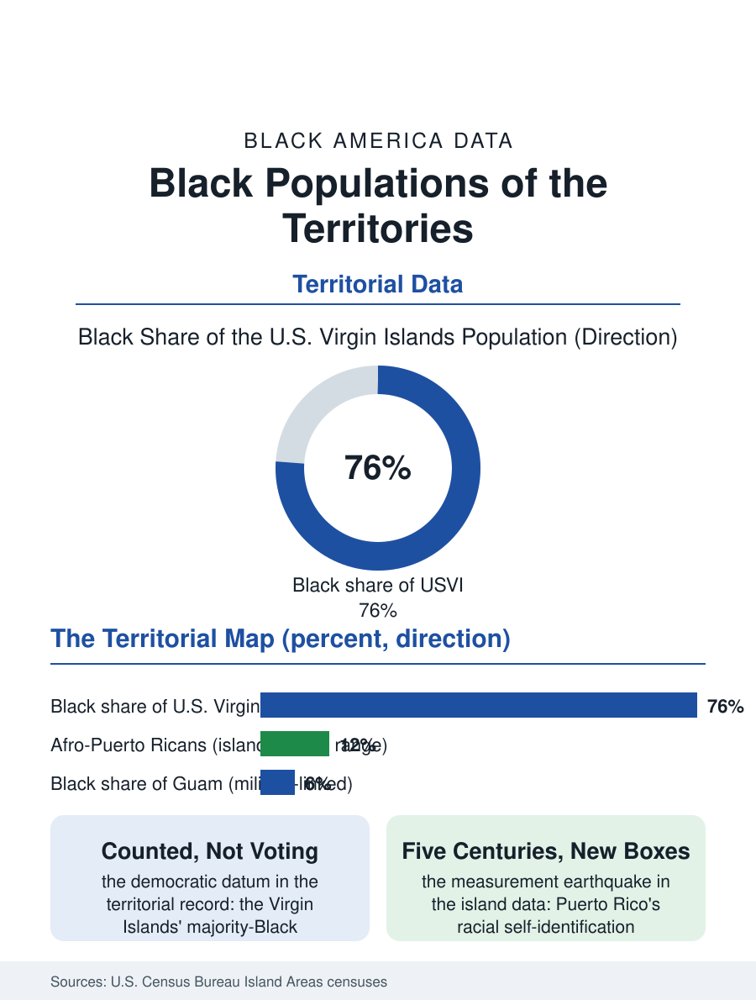

Black Census
Beyond the Fifty: Black Populations of the Territories
The Virgin Islands are majority Black, Puerto Rico's African root is five centuries deep, and Guam holds a military diaspora: the territories complete the map. The territories file.

Black America does not end at the fifty states. The territories, Puerto Rico, the U.S. Virgin Islands, Guam, and the smaller possessions, hold Black populations with their own census histories, most consequentially the Virgin Islands, whose population is majority Black, and Puerto Rico, where Afro-Puerto Ricans constitute one of the oldest Black populations in the hemisphere. The decennial census counts them on separate instruments from the stateside surveys. This article reads the territories file.
St. Croix, St. Thomas, and the Majority
The U.S. Virgin Islands are the atlas's only majority-Black jurisdiction under the American flag: the census counts roughly three quarters of the territory's hundred thousand residents as Black, descendants of the enslaved Africans of the Danish sugar colony, whose emancipation in 1848 predates the American one and whose transfer to the United States in 1917 made them citizens of a country whose racial geography they complicate. Crucians, Thomans, and Johnians maintain distinct island identities atop the shared one, and the territory's data profile, its tourism and government economy, its hurricane exposure and recovery file after the twin storms of 2017, its energy costs among the hemisphere's highest, resembles the Caribbean files more than any stateside county's. The political status writes the file's central datum: territorial residents are U.S. citizens who cannot vote for president and send a non-voting delegate to Congress, a democratic deficit the territory's own status debates have contested for a century. The migration exchange with the mainland is constant and two-way, Virgin Islanders forming a distinctive community in Florida and the Carolinas while mainland Black Americans retire and relocate to the islands, a stream the territory's counts register as it grows.
Puerto Rico's African Root
Puerto Rico's census tells the hemisphere's oldest African story in the language of its own categories. The island's race data have historically recorded a population majority-identifying as white, with Black identification in the single digits, percentages that the 2020 census saw shift dramatically, multiracial and other-race responses surging as the island's identity conversation moved, a measurement earthquake the demographers are still interpreting. Beneath the categories sits the documented history: Puerto Rico received enslaved Africans from the sixteenth century, its culture's African root is structural, in the music, the cuisine, the language, and towns like Loiza preserve Afro-Puerto Rican tradition as a living civic identity rather than a heritage exhibit. The Afro-Puerto Rican experience within the island's data mirrors the stateside pattern in a different key: darker-skinned Puerto Ricans record lower incomes and higher poverty in the island's survey analyses, a pigment gradient inside a population the stateside forms file as one ethnicity. The stateside exchange completes the file: the Puerto Rican diaspora in New York, Florida, and Chicago includes its Afro-Puerto Rican share, counted in the stateside data as both Hispanic and Black, the two-question census format splitting a single identity into the ancestry file's most complicated cell, and the Afro-Latino population file in this atlas is substantially this population's stateside chapter.
Guam and the Far Pacific
The Pacific territories hold the file's smallest and most distinctive Black populations: the service members and their families of Guam's great bases, a rotating Black population on an island whose indigenous Chamorro and Filipino majorities make the Black community a military diaspora rather than a rooted one, with a small permanent settler layer of veterans and contractors who stayed. The pattern replicates across the Pacific presence and, in miniature, in American Samoa's far thinner counts. What unites the territories file is the counting itself: the decennial census enumerates the territories fully while the annual surveys that fill this atlas largely exclude them, so the territories' Black populations appear in the national data in ten-year snapshots, a visibility interval that matches their political one, present in the whole nation's portrait once a decade and administered in between at a distance. The territories file closes on the map's edge, where the flag's Black citizens include Danish-colony descendants in the Caribbean and the Afro-Puerto Rican towns of the island's north coast, populations whose inclusion corrects the atlas's mainland habit. Black America was never only the fifty states. Its census never said it was; only the summaries forgot. The next decennial count will draw the portrait again, territories included, as it has since the flag arrived over each of them.
More in Black Census
The Black Population of the United States: Size, Definitions, and Distribution
The Black population of the United States totals 52.8 million — 15.4 percent of the nation. How the Census Bureau defines and counts the population, and where it lives.
Black Median Household Income in the United States
Black median household income stands at $56,490 in the Census Bureau's annual income report — how the figure is measured, how it compares, and what drives it.
The Black Poverty Rate: Levels, Children, and the Long Trend
The official Black poverty rate is 17.1 percent — against 11.1 percent nationally and 7.7 percent for non-Hispanic White Americans. How poverty is measured and what the data show.
Source: U.S. Census Bureau, Island Areas censuses for Puerto Rico, U.S. Virgin Islands, and Guam; territorial statistical offices.